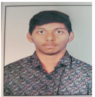

DHONTHULA KARTHIK

Address: 1&4, AECS Layout, 4th Cross Rd
Lakshminarayana Pura, Kundalahalli, Bengaluru.
BENGALURU, KARNATAKA 560037
Email ID: kadh22cse@cmrit.ac.in
Mobile No: 7989966729
LinkedIn: linkedin
Github: Github
CAREER OBJECTIVE
To secure a challenging position in a reputable organization that allows me to utilize my technical, analytical, and
problem-solving skills in software development and innovation while contributing to the company’s growth and
gaining professional experience.
EDUCATION QUALIFICATION
Bachelor of Engineering – Computer science Engineering
CMRIT, AECS Layout, Bangalore
7.62, 2026(Pursuing)
12th – Science
Narayana College, Kurnool, Andhra Pradesh
91.2%, 2022
10th
CRR Secondary School, Kurnool, Andhra Pradesh
81.6%, 2020
TECHNICAL SKILLS
Languages: Python, Java, C
Technologies: HTML, CSS
Tools & Platforms: Visual Studio Code, Android Studio, Git, Postman, Firebase Console
Database: Relational Database Management Systems, NoSQL Databases
Personal Details